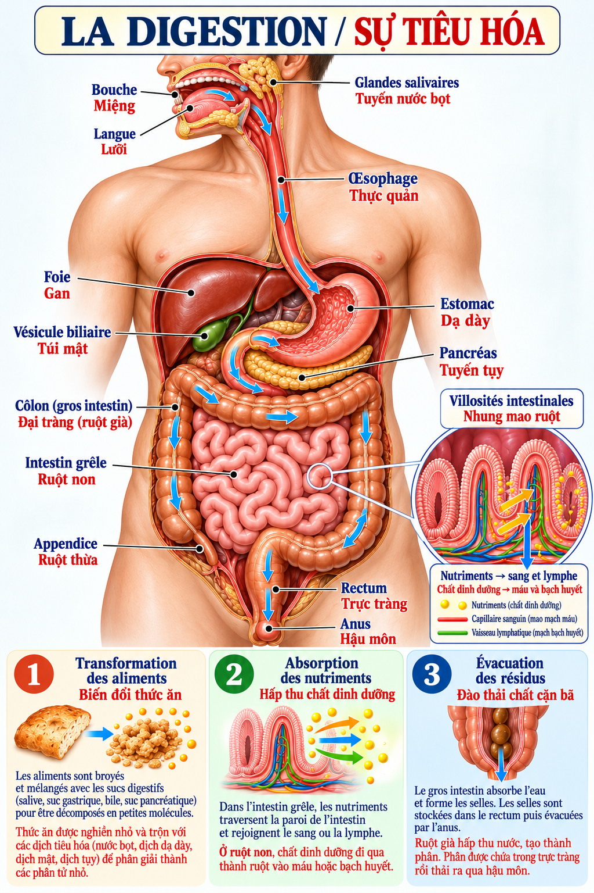

🇫🇷 MINI QUEST · GAME #04
🧩 Mission Digestion
Le voyage des aliments · Ôn tập bài « La digestion »
Mission 1 / 3⭐ Score: 0

Hãy xem lại kiến thức rồi tiếp tục chơi nhé!
Le voyage des aliments · Ôn tập bài « La digestion »

Hãy xem lại kiến thức rồi tiếp tục chơi nhé!